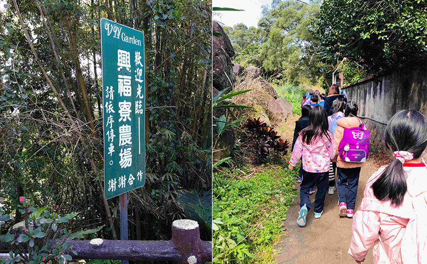
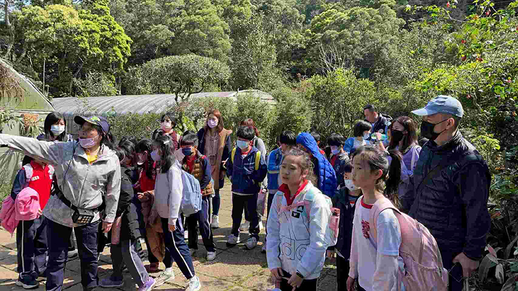
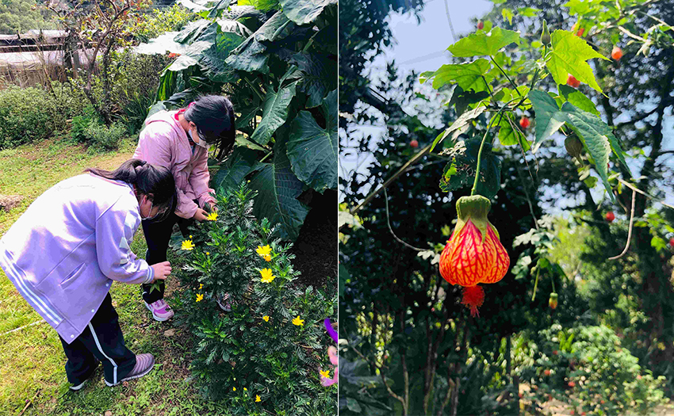
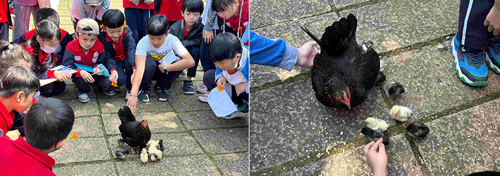
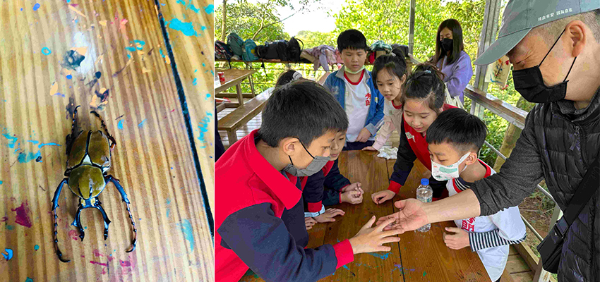
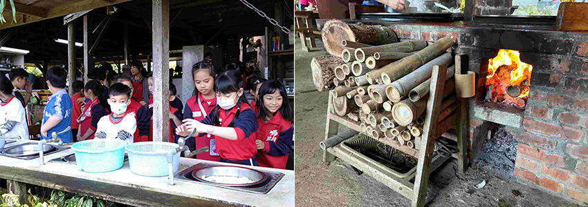
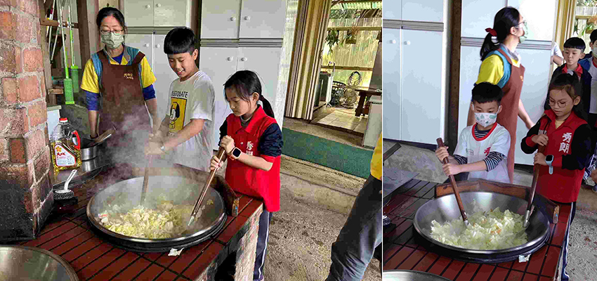
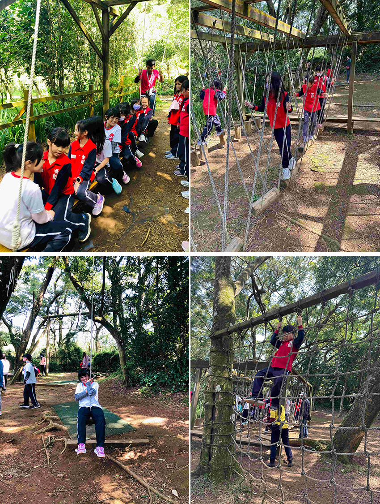

今年春天陪著小兒子參加國小下學期的戶外教學活動，目的地在淡水興福寮休閒農場，從新北市永和搭遊覽車到目的地約莫一個半小時的車程，到了目的地，孩子們依循著農場的指標穿過森林小徑進入了興福寮農場。
|  |
位處於大屯山腰上四千多坪的戶外休閒農場，擁有豐富生態資源和種植著數種花卉以及家禽和冒險挑戰設施，解說員青蛙老師在入口處迎接小孩們，準備展開今天行程一系列活動的導覽。
當日的導覽活動行程時間安排如下：
1. 農藝體驗－摘採植物的五感體驗。
2. 生態導覽－土雞的故事、昆蟲世界。
3. 古灶炊煮－洗菜、炒菜古灶炊煮體驗。
4. 森林遊戲－盪泰山、走單索、爬樹等體驗。
|  |
首先登場的活動是農藝體驗：園區種植的花卉很多，四季隨時都能看到綻放的花朵植物，孩子們都很專心的聆聽青蛙老師介紹如何分辨每一種植物的葉子、花朵和氣味。
|  |
|  |
在參觀完植物和花卉之後，隨即展開生態導覽，看著母雞帶著小雞在園區隨意走動，這讓在都市裡的孩子們覺得非常驚喜，孩子們也紛紛都彎下腰展開近距離的用手拿飼料餵食母雞和小雞。
|  |
快接近中午時分，開始進行古灶炊煮活動，主要是讓小孩們體驗以前在沒瓦斯爐用柴燒的古灶煮菜的烹煮方式，每位小孩們都興高采烈從洗菜、取木柴生火後，開始忙著拿炒菜大鍋鏟開始炒著香噴噴的高麗菜，炒完了菜小朋友們的肚子也都飢腸轆轆準備要來填飽肚子，農場準備的午餐除了小朋友品嘗自己炒的高麗菜之外，同時也有準備了菜脯蛋、炒雞肉以及玉米濃湯 （三菜一湯豐盛的美味佳餚），讓小朋友在中午吃飽後有體力可以進行下午的體能遊戲。
|  |
|  |
用完午餐，稍作休息片刻之後，導覽老師帶領著孩子們走了20分鐘的路程到達農場的森林遊戲區開始下午的活動-盪泰山、走單索、爬樹，小朋友們遠離塵囂體驗最原始的森林遊樂設施，每項遊樂設施大人和小孩都玩得不亦樂乎，臉上也露出滿足的微笑，約莫下午三點在和導覽老師道別後，小朋友們都帶著依依不捨的心情坐著遊覽車歸賦，並把今天滿滿幸福的旅程打包帶回家。
|  |
藉由這次的行程，讓我深刻體驗其實小孩們最單純的遊戲來自於最原始的森林遊樂就可以玩得很開心很盡興，大家周末假日或是休假之餘可以多多安排親子戶外踏青家庭活動，遠離城市走出戶外，多接觸大自然也能夠藉由更多的親子互動來增進親子情感。